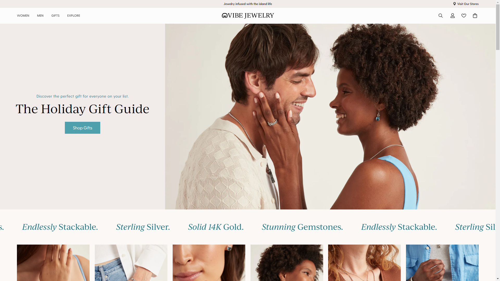
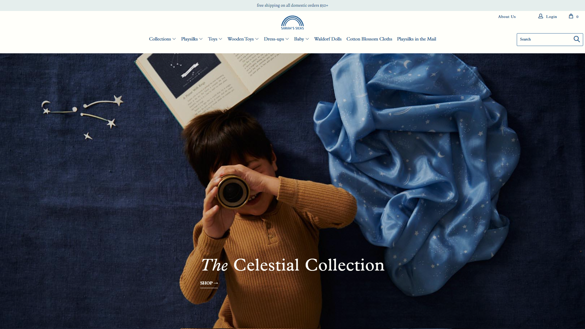

Currently
Empowering individuality at Vibe Jewelry
E‑commerce Manager
For the previous four years, I've been the E‑commerce Manager at Vibe Jewelry. I lead and optimize the online storefront, overseeing website design, development, and performance. I partner closely with leadership on strategic initiatives, collaborate with marketing on campaigns and content, and maintain the technology stack that supports our growth. I also support inventory and retail operations while driving continuous improvements through data, analytics, and evolving market trends.
Vibe Jewelry specializes in handcrafted sterling silver and 14K gold Caribbean-inspired jewelry.

Previously
Inspiring imagination at Sarah's Silks
E‑commerce Specialist and Web Designer/Developer
I supported the Shopify Plus storefront across design, development, and E‑commerce operations. I collaborated closely with marketing, tracked performance across digital channels, supported product research, and assisted leadership with strategic and technical decisions.
Sarah's Silks creates open-ended playsilks, costumes and wooden toys that promote imaginative play in children.

About Me
Who, me?
I'm an E‑commerce specialist with 8+ years of experience working inside small and mid-sized businesses. I approach E‑commerce management as an operator, staying close to the day-to-day work and stepping in wherever something needs attention to keep things running smoothly.
That often means moving across design, development, marketing, operations, inventory, customer service, and logistics. I enjoy that range and the context it gives me. It leads to better decisions and fewer surprises later.
How I tend to work
I'm comfortable moving between strategy and execution. Some days that's brainstorming storefront updates and working on the marketing plan with the team. Other days it's troubleshooting inventory issues, reviewing adset performance, or stepping in where something is quietly breaking down.
I pay close attention to how decisions ripple across the business. I'm often asking how something will affect operations, margins, customer experience, or the team six months down the line, not just whether it works today.
What I'm good at
I'm good at helping E‑commerce stay understandable, manageable, and steady as a business grows. I help teams make clear decisions, untangle complexity, and focus on improvements that compound over time.
Things I believe
Complexity is usually self-inflicted. Most businesses don't become complex because the problem is complex. They become complex because decisions were made without considering how they stack.
Most problems don't announce themselves. Serious issues rarely show up as obvious failures. They show up as friction. Friction is how systems warn you early.
Tools don't fix unclear thinking. New tools promise leverage, speed, and insight. What they actually do is amplify whatever thinking already exists.
Optimization locks things in. Optimizing too early assumes the system is correct. It rarely is. Get something working first.
Work should reduce future work. A good fix removes a problem and makes similar problems less likely. A bad fix guarantees it will return.
Every wheel needs realignment after a while. Alignment degrades quietly as decisions accumulate. Realignment requires revisiting assumptions, not restating objectives.
Get in Touch
Do you have a project that needs some love? Shoot me a message at tonyksarg@gmail.com. I look forward to hearing from you.
Get in touch